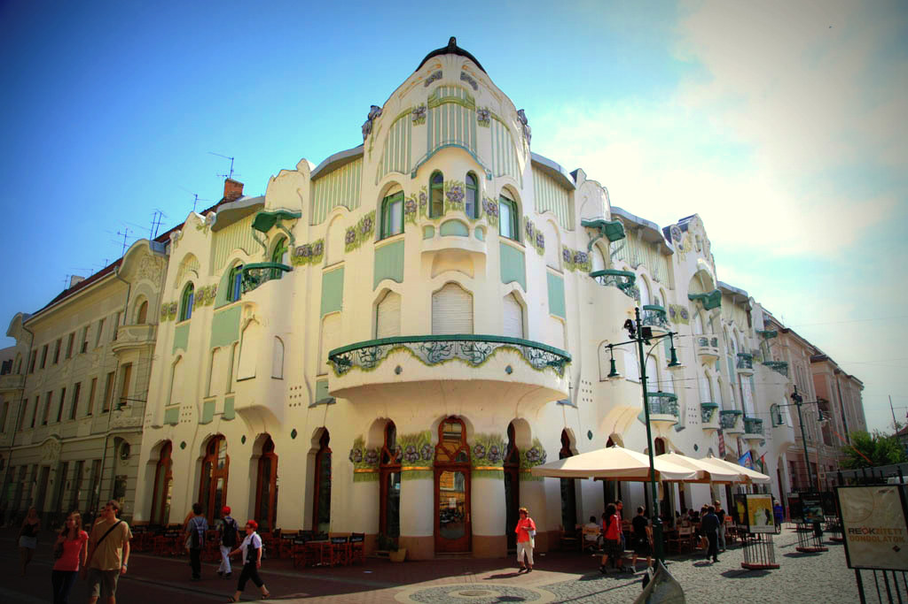
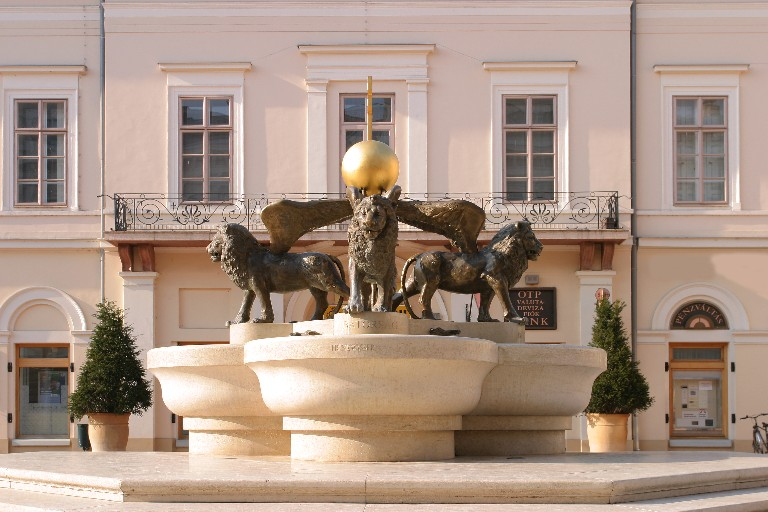
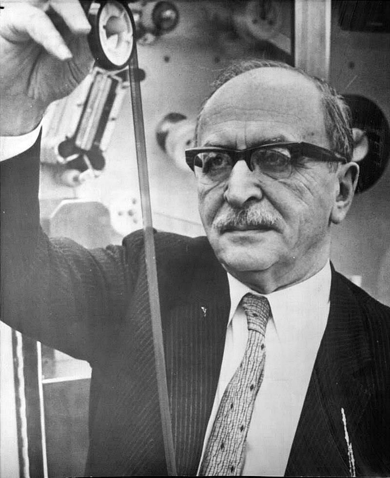

Határtalanul kirándulás


Az iskolánkról:
A Gábor Dénes Gimnázium és Szakközépiskola a régió egyik vezető középfokú szakképzési iskolája. Szeged (amely a megye fővárosa, és Magyarország harmadik legnagyobb városa)központjában található a Mars tér mellett.
Az iskola nevét Gábor Dénesről, villamosmérnök és fizikusról kapta, akit Nobel-díjjal jutalmaztak a holografikus módszer feltalálásáért és kifejlesztéséért.
Iskolánk 9-14. évfolyamokból áll. Több mint 1400 diák tanul itt. 9-12. évben az általános ismeretekre és szakmai fejlődésre, míg 13. és 14. évben bizonyos területeken a szakmai képesítés megszerzése a fő cél.


Tanulható ágazatok:
- Elektromos ipar és elektronika
- Informatika
- Távközlés
- Pedagógia
- Környezetvédelem
- Sport
- Szállítás és logisztika
- Hidrológia és vízgazdálkodás
Iskolánk vezetősége az igazgatóból és négy igazgatóhelyettesből áll, akiknek a feladata a különböző oktatási és irányít ási feladatok elvégzése. A Szegedi Szakképzési Központ tagiskolájaként a Központ igazgatója az intézmény igazgatója is.
Az angol nyelv tanulása mellett, minden diáknak lehetősége van német nyelvet tanulni. Angol nyelvből sem csak az általános nyelvet hanem speciális célokra például informatikára pedagógiára, környezetre, elektronikára és logisztikára is. Nyelvi osztályunknak több mint 15 tagja van. Ez egy nagyon aktív osztály, amely egész évben különböző versenyek és rendezvények szervezésével népszerűsíti a nyelvtanulást.
A Cserediák Program több mint egy évtizedes múltra tekint vissza. Évente mintegy 20 diák vesz részt, akik német, holland, lengyel és olasz diáktársakkal együtt vesznek részt nemzetközi projektekben. A résztvevő diákok minden évben tavasszal és ősszel vendégül látják egymást. Ennek a csereprogramnak számos előnye van - a diákok megismerik egymás országait és kultúráját, barátságokat is kialakítanak, megismerik a projekt témáját, és mindenekelőtt kitágítják az elméjüket, és megtanulják értékelni a sokszínűséget.
Iskolánk életében a sport mindig is kiemelt helyen szerepelt. A mindennapos testnevelés bevezetésével nőtt a testnevelő személyzet létszáma, ami egyben azt is jelenti, hogy a sportágak szélesebb skáláját lehet tanulni, mint tanórán kívüli tevékenységet. Tanulóink a kézilabdától a futballon, a kosárlabdán, az atlétikán át a vízi sportokig, sőt a harcművészetekig különböző sportágakban sikeresek. Tanulóink részt vesznek a diákolimpiai játékokon, és népszerűsítik iskolánk hírnevét. Tanulóink számára iskolai programokat szerveznek, mint például vízitúra, sífutás és síelés.
Iskolánk sok jelenlegi és volt tanulója kiemelkedő eredményeket ért el a sportban.
Szeged nevezetességei:
Reök-palota
Magyar Ede építész harmincéves korában, 1907-ben építette meg a magyaros szecesszió példaértékű alkotását, a Reök-palotát. Az építtető, Munkácsy Mihály unokaöccse, Reök Iván vízépítő mérnök volt, ezért a víz lett az épület meghatározó motívuma. A REÖK zenei programok, kisebb színházi produkciók és más kulturális események közismert színhelye is.
Klauzál tér
A Kárász utca és a Klauzál tér értékőrző felújítását Európa Nostra-díjjal ismerték el 2004-ben. A javarészt a 19. század során felépített belvárosi paloták magukon viselik az építésük idején egymással versengő stílusirányzatok, a klasszicizmus, az eklektika és a szecesszió jellemző jegyeit.
Vadaspark
Akár egész napos programot kínál a Szeged belvárosától mindössze 2,5 km-re fekvő, 45 hektáros erdős környezetben található állatkert. Állatait földrészek szerinti csoportosításban mutatja be, törekedve arra, hogy a természetes életkörülményeket biztosítsa számukra. A Vadaspark a veszélyeztetett állatfajok nemzetközi fajmentő tenyészprogramok keretében történő tartását tekinti egyik kiemelt feladatának. Az olyan ritkaságok mellett, mint a sörényes hangyász, karmosmajmok, fossza, ködfoltos párduc, számos népszerű állatkerti állattal is találkozhatunk a látogatók, a szurikátától a zsiráfig, sőt, 2018 óta ázsiai elefántokkal, 2020 tavaszától indiai orrszarvúkkal is. Az év szinte minden napján látogatható gyűjtemény zoopedagógiai foglalkozásokkal, látványetetésekkel, valamint alkalmanként éjszakai túrákkal is kedveskedik vendégeinek.
Napfényfürdő Aquapolis
A négyévszakos víziváros 4400 m2 vízfelülettel, Európa leghosszabb, éves üzemelésű vízicsúszdájával várja vendégeit. A fürdőkomplexumban minden korosztály megtalálja a számára legmegfelelőbb kikapcsolódási formát. A 2010-ben megnyílt létesítmény legattraktívabb elemei a lifttel megközelíthető, 30 méter magas toronyból induló 223 és 272 m hosszú, zárt óriáscsúszdák. 13 csúszda összesen 1000 méter hosszan biztosítja a csúszás örömét a kalandkedvelőknek. A kültéri wellness medence, a sodrófolyosók, pezsgőágyak, zuhatagok felejthetetlen szórakozást és kikapcsolódást nyújtanak. A pihenésre és regenerálódásra vágyók a fürdő csendes wellness részlegében találnak ideális körülményeket: élmény- és pezsgőmedencék, masszázskezelések, finn szauna, infraszauna, római gőzkabin, sókamra, aromakabin és kültéri rönkszauna áll a vendégek rendelkezésére.

Az iskola névadója:
Élete
Gábor Dénes (Dennis Gabor, született Günszberg) (Budapest, Terézváros, 1900. június 5. – London, 1979. február 9.) Nobel-díjas magyar fizikus, gépészmérnök, villamosmérnök, a holográfia feltalálója.
A Terézvárosban született, zsidó családban. Édesapja, Günszberg Bernát a Magyar Általános Kőszénbánya Részvénytársaságnál (MÁK Rt.) dolgozott, főkönyvelőként, majd cégvezetőként, végül igazgatóként, 1928-ig. Édesanyja Jakobovits Adél. A szülők 1899-ben kötöttek házasságot, s három gyermekük született: Dénes (1900), György (1901) és Endre (1903). Az apa 1902. március 8-án fiaival együtt engedélyt kapott, hogy családnevüket „Gábor”-ra változtassák.
A Szemere utcai községi elemi népiskolába járt (1906–1910), a középiskolát a Budapest V. kerületi Markó utcai Főreáliskolában (1910–1918) végezte. 1911. november 14-én kelt az Aeroplán körhinta szabadalmi leírása (a bejelentés napja: 1910. október 8.). 1918. március 6-án érettségizett, 15-én már be is hívták katonának, az észak-itáliai fegyverszünet után tért haza. Ehhez kapcsolódik olasz nyelvtanulása, amely negyedik nyelvismerete lett. Novemberben beiratkozott a Magyar királyi József nádor Műszaki és Gazdaságtudományi Egyetem gépészmérnöki osztályába. 1919. május 24-én áttért az evangélikus vallásra. 1920-tól Berlinben folytatta tanulmányait a charlottenburgi Technische Hochschule elektromérnöki karán. Itt rendszeresen látogatta a tudományegyetem előadásait, többek között Albert Einstein szemináriumát, mely Szilárd Leó kezdeményezésére jött létre, és aki az előadásokra meghívta Wigner Jenőt, Neumann Jánost és Gábor Dénest.
Az 1920-as években a nagyfeszültségű hálózatok üzemében fellépő tranziens jelenségek sok problémát okoztak, de a vizsgálatukhoz sem módszerek, sem eszközök nem álltak rendelkezésre. 1927-ben disszertációjában tranziens jelenségek rögzítése érdekében az oszcillográf érzékenységének növelését dolgozta ki. 1927–1932 között Siemensstadtban, a Siemens és Halske kutatólaboratóriumában, 1932–1933-ban pedig Erlangenben, a Siemens-Reiniger-Veifa nevű cégnél dolgozott. 1933-ban, a náci hatalomátvétel után elhagyta Németországot és hazatért Magyarországra. 1933-tól 1934-ig az Egyesült Izzó kutatólaboratóriumában a gázkisülés fizikájával foglalkozott. 1934-ben végleg letelepedett Angliában, brit állampolgár lett. 1934-től 1948-ig a British Thomson-Houston Társaság kutatólaboratóriumában dolgozott Rugbyben (Warwickshire).
1936. augusztus 8-án feleségül vette Marjorie Louise Butlert, akivel haláláig harmonikus házasságban élt, gyermekük nem született. 1942. október 25-én Budapesten meghalt édesapja. 1946-ban édesanyja hozzá és testvéréhez Angliába költözött. 1947-ben itt találta fel a holográfiát, amiért később, 1971-ben fizikai Nobel-díjat kapott. A holográfia azonban 1960-ig, a lézer feltalálásáig nem terjedt el. 1949–1958 között az Imperial College-ban elektronikát adott elő. 1956-ban a Royal Society a tagjává választotta. 1958-tól 1967-ig az alkalmazott elektronfizika professzora volt az Imperial College-ban. Gábor Dénes az emberi kommunikációt és a hallást is tanulmányozta.
Művei
- Válogatott tanulmányok
- Tudományos, műszaki és társadalmi innovációk
- Találjuk fel a jövőt!
- Az érett társadalom
Emlékezete
- Nevét megörökíti a Gábor-érem (Gabor Medal).
- A “NOVOFER Alapítvány a Műszaki-Szellemi Alkotásért”[5] 1989-ben hozta létre a Gábor Dénes-díjat, amelyet minden évben azoknak a - határainkon belül és azokon kívül élő - magyar természettudósoknak, mérnököknek, feltalálóknak, kutatóknak, oktatóknak adományoznak, akik kiemelkedő innovációval vagy kutatási eredménnyel, illetve a felsőfokú képzésben nyújtott teljesítményükkel járultak hozzá a magyar tudományos-műszaki haladáshoz, az ország fejlődéséhez.
- Nevét viseli a Gábor Dénes Főiskola, amelynek Magyarországon és a határon túl (Erdélyben, a Felvidéken) több nagyvárosban van campusa.
- Szegeden található a Gábor Dénes Gimnázium és Műszaki Szakközépiskola, amely minden évben megrendezi a Gábor Dénes Országos Számítástechnikai Emlékversenyt.
- Gábor Dénes emléktáblája Londonban
- Születésének 100. évfordulójára a Magyar Nemzeti Bank ezüst emlékpénzt adott ki.
- Egykori iskolája és lakóháza falán tábla őrzi emlékét.
- Debrecenben nevét viselte a Gábor Dénes Elektronikai Műszaki Szakközépiskola és Kollégium 1990 és 2014 között.
- A 72071 Gábor kisbolygó viseli a nevét.
- Az Imperial College-ban külön termet neveztek el róla, illetve fejszobra mellett Nobel-medálja is ki van állítva.
- 2006-ban az angol tudományos és kulturális örökséget ápoló hatóság, az English Heritage, kék emléktáblát adományozott a londoni Kensington and Chelsea kerületben lévő Queens Gate utcában, a tudós egykori lakóházán.